Chapter 30 Regression Diagnostics
Some of this discussion comes from Bock, Velleman, and De Veaux (2004).
Multiple linear regression (also called ordinary least squares, or OLS) has four main assumptions that are derived from its model.
For a simple regression, the model underlying the regression line is \(E(Y) = \beta_0 + \beta_1 x\)
- where E(Y) = the expectation (mean) of the outcome Y,
- \(\beta_0\) is the intercept, and
- \(\beta_1\) is the slope
Now, if we have a multiple regression with three predictors \(x_1, x_2\) and \(x_3\), then the model becomes \(E(Y) = \beta_0 + \beta_1 x_1 + \beta_2 x_2 + \beta_3 x_3\).
Alternatively, we can write the model to relate individual y’s to the x’s by adding an individual error term: \(y = \beta_0 + \beta_1 x_1 + \beta_2 x_2 + \beta_3 x_3 + \epsilon\)
Of course, the multiple regression model is not limited to three predictors. We will often use k to represent the number of coefficients (slopes plus intercept) in the model, and will also use p to represent the number of predictors (usually p = k - 1).
30.1 Building an Example: 500 subjects from WCGS
To fix ideas, suppose we return to the Western Collaborative Group Study (WCGS) data we studied back in Chapter 13, which described 3154 men ages 39-59 who were free of heart disease and were employees of one of 10 California companies in 1960-1961.
We are going to select a random sample of 500 of those men, with complete data on our outcome of interest, which is total cholesterol in mg/dl (chol) and on our three predictors of interest, which are systolic blood pressure in mm Hg (sbp), body mass index (bmi) and behavioral pattern (dibpat), which is a two-category variable with levels “Type A” or “Type B”.
- Individuals exhibiting a Type A behavior pattern show evidence of being competitive and self-critical without feeling joy in their efforts or accomplishments, and are more likely to have high work involvement, important life imbalance, and high blood pressure.
- Individuals exhibiting a Type B behavior pattern show evidence of being more reflective, more relaxed, less competitive and less anxious then Type A individuals.
- There is substantial evidence to discredit the Type A Behavior Pattern theory in some areas, and some scholars definitely argue that Type A behavior is not a good predictor of coronary heart disease.
Below we create this sample of 500 subjects with complete data on our outcome and each of our three predictors.
set.seed(12345)
wcgs_500 <- wcgs %>%
select(id, sbp, bmi, dibpat, chol) %>%
filter(complete.cases(.)) %>%
slice_sample(n = 500, replace = FALSE)Next, we’ll look at a scatterplot matrix, placing our outcome last, as usual.
# requires library(GGally)
ggpairs(wcgs_500 %>% select(sbp, bmi, dibpat, chol),
lower = list(combo = wrap("facethist", binwidth = 0.5)),
title = "Scatterplot Matrix for 500 WCGS subjects")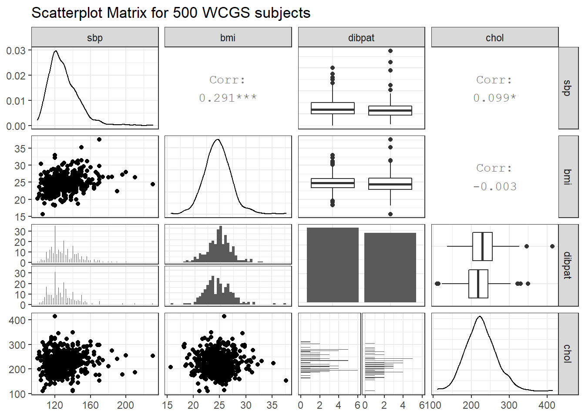
Next, we create our planned linear model, and evaluate the coefficients and fit quality.
Call:
lm(formula = chol ~ sbp + bmi + dibpat, data = wcgs_500)
Residuals:
Min 1Q Median 3Q Max
-113.133 -25.689 -1.932 24.036 186.390
Coefficients:
Estimate Std. Error t value Pr(>|t|)
(Intercept) 214.5185 19.8825 10.789 < 2e-16 ***
sbp 0.2361 0.1125 2.099 0.03634 *
bmi -0.5894 0.7290 -0.808 0.41921
dibpatType B -11.0408 3.5643 -3.098 0.00206 **
---
Signif. codes: 0 '***' 0.001 '**' 0.01 '*' 0.05 '.' 0.1 ' ' 1
Residual standard error: 39.66 on 496 degrees of freedom
Multiple R-squared: 0.02954, Adjusted R-squared: 0.02367
F-statistic: 5.033 on 3 and 496 DF, p-value: 0.001915As usual, we’ll use tidy and glance from the broom package (part of tidymodels) to evaluate the coefficients in more detail, and summarize the quality of fit for our model.
tidy(chol_m1, conf.int = TRUE, conf.level = 0.90) %>%
select(term, estimate, std.error, conf.low, conf.high, p.value) %>%
kable(dig = 3)| term | estimate | std.error | conf.low | conf.high | p.value |
|---|---|---|---|---|---|
| (Intercept) | 214.519 | 19.883 | 181.753 | 247.284 | 0.000 |
| sbp | 0.236 | 0.112 | 0.051 | 0.421 | 0.036 |
| bmi | -0.589 | 0.729 | -1.791 | 0.612 | 0.419 |
| dibpatType B | -11.041 | 3.564 | -16.915 | -5.167 | 0.002 |
glance(chol_m1) %>%
select(r.squared, adj.r.squared, sigma, AIC, BIC, nobs) %>%
kable(dig = c(3, 3, 1, 1, 1, 0))| r.squared | adj.r.squared | sigma | AIC | BIC | nobs |
|---|---|---|---|---|---|
| 0.03 | 0.024 | 39.7 | 5105.3 | 5126.4 | 500 |
This isn’t a terrific model, accounting for only 3% (according to \(R^2\)) of the variation in our outcome, although some of the individual predictors show effects that meet our usual standards for “detectable” results. Our goal, though, is to use this model as an example for studying residual diagnostics to search for possible violations of regression assumptions.
To assess regression assumptions, we’ll have to look at residuals and fits for each of the individual points, which we can obtain use the augment function from the broom package.
This augments the original data with several summaries of the quality of fit for our individual rows in the wcgs_500 data. Here are the first few values for some of the elements of augment.
| id | sbp | bmi | dibpat | chol | .fitted | .resid |
|---|---|---|---|---|---|---|
| 10155 | 120 | 18.162 | Type B | 294 | 221.104 | 72.896 |
| 3495 | 140 | 24.807 | Type A | 301 | 232.950 | 68.050 |
| 12634 | 124 | 21.616 | Type A | 196 | 231.054 | -35.054 |
| 21354 | 114 | 25.381 | Type A | 176 | 226.474 | -50.474 |
| 3085 | 190 | 22.349 | Type A | 241 | 246.203 | -5.203 |
| 3589 | 140 | 23.054 | Type B | 268 | 222.943 | 45.057 |
This includes the original data, plus the model’s predicted value for chol, stored in .fitted and the residual (actual chol - .fitted) stored in .resid. Here are the other elements of the augment result.
| id | .std.resid | .hat | .sigma | .cooksd |
|---|---|---|---|---|
| 10155 | 1.854 | 0.017 | 39.563 | 0.015 |
| 3495 | 1.720 | 0.005 | 39.583 | 0.003 |
| 12634 | -0.887 | 0.007 | 39.670 | 0.001 |
| 21354 | -1.277 | 0.007 | 39.636 | 0.003 |
| 3085 | -0.134 | 0.038 | 39.700 | 0.000 |
| 3589 | 1.140 | 0.007 | 39.649 | 0.002 |
Here, we see:
.std.residthe standardized residual, which is a measure of how poorly fit the point is, scaled to have standard deviation 1 (the raw residuals, as well as these, already have mean 0).hat, the hat matrix value, which is a measurement of the leverage this point has on the model. Leverage is, essentially, a measure of how unusual the point is in terms of the predictors..sigma, the value of the residual standard error.sigmathat would emerge if this point was deleted from thechol_m1model, and.cooksd, Cook’s distance, or Cook’s d, which measures the influence of this point on the model. A highly influential point (one with.cooksdgreater than 0.5, for instance) would be a point that, if removed from thechol_m1model, would substantially change the fit of the model or the coefficient estimates.
30.2 The Four Key Regression Assumptions
The assumptions and conditions for a multiple regression model are nearly the same as those for simple regression. The key assumptions that must be checked in a multiple regression model are:
- Linearity Assumption
- Independence Assumption
- Equal Variance (Constant Variance / Homoscedasticity) Assumption
- Normality Assumption
Happily, R is well suited to provide us with multiple diagnostic tools to generate plots and other summaries that will let us look more closely at each of these assumptions.
30.3 The Linearity Assumption
We are fitting a linear model.
- By linear, we mean that each predictor value, x, appears simply multiplied by its coefficient and added to the model.
- No x appears in an exponent or some other more complicated function.
- If the regression model is true, then the outcome y is linearly related to each of the x’s.
Unfortunately, assuming the model is true is not sufficient to prove that the linear model fits, so we check what Bock, Velleman, and De Veaux (2004) call the “Straight Enough Condition”
30.3.1 Initial Scatterplots for the “Straight Enough” Condition
- Scatterplots of y against each of the predictors are reasonably straight.
- The scatterplots need not show a strong (or any!) slope; we just check that there isn’t a bend or other nonlinearity.
- Any substantial curve is indicative of a potential problem.
- Modest bends are not usually worthy of serious attention.
For example, in the wcgs_500 data, here are the relevant scatterplots for the quantitative predictors (in practice, I would simply look at the scatterplot matrix shown earlier) as well as a boxplot with violin for the categorical predictor (dibpat).
p1 <- ggplot(wcgs_500, aes(x = sbp, y = chol)) +
geom_point() +
geom_smooth(method = "loess", se = FALSE, span = 2, formula = y ~ x) +
geom_smooth(method = "lm", se = FALSE, col = "tomato", formula = y ~ x)
p2 <- ggplot(wcgs_500, aes(x = bmi, y = chol)) +
geom_point() +
geom_smooth(method = "loess", se = FALSE, span = 2, formula = y ~ x) +
geom_smooth(method = "lm", se = FALSE, col = "tomato", formula = y ~ x)
p3 <- ggplot(wcgs_500, aes(x = dibpat, y = chol)) +
geom_violin(aes(fill = dibpat)) +
geom_boxplot(width = 0.3) +
coord_flip() + guides(fill = FALSE)
(p1 + p2) / p3 +
plot_layout(heights = c(2,1)) +
plot_annotation(title = "WCGS_500 Cholesterol vs. Predictors")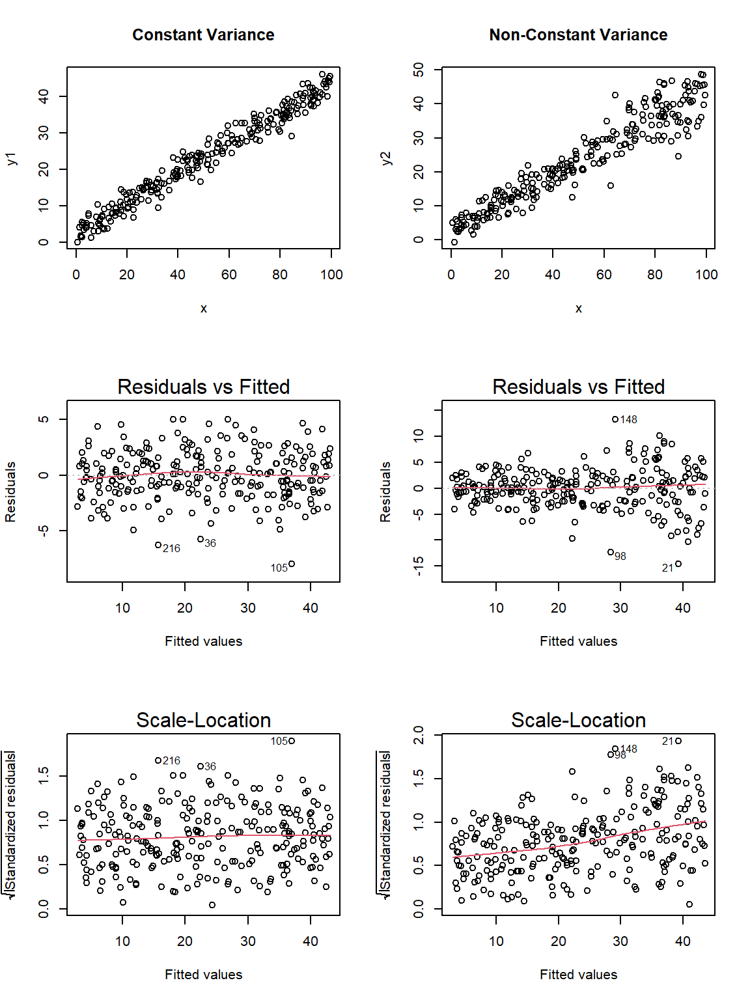
Here, I’ve simply placed recov.score on the vertical (Y) axis, plotted against each of the predictors, in turn. I’ve added a straight line (OLS) fit [in tomato red] and a loess smooth [in blue] to each plot to guide your assessment of the “straight enough” condition. Note the use here of span = 2 in the loess smooths to produce lines that are less wiggly than they would be using the default span = 0.75.
- Each of these is “straight enough” for our purposes, in initially fitting the data.
- If one of these was not, we might consider a transformation of the relevant predictor, or, if all were problematic, we might transform the outcome Y.
30.3.2 Residuals vs. Predicted Values to Check for Non-Linearity
The residuals should appear to have no pattern (no curve, for instance) with respect to the predicted (fitted) values. It is a very good idea to plot the residuals against the fitted values to check for patterns, especially bends or other indications of non-linearity. For a multiple regression, the fitted values are a combination of the x’s given by the regression equation, so they combine the effects of the x’s in a way that makes sense for our particular regression model. That makes them a good choice to plot against. We’ll check for other things in this plot, as well.
When you ask R to plot the result of a linear model, it will produce up to five separate plots: the first of which is a plot of residuals vs. fitted values.
30.3.2.1 Using plot(model, which = 1)
To obtain this plot for the model including sbp, bmi and dibpat to predict chol we have two options. The simpler approach uses the following code to indicate plot 1 using the which command within the plot function.
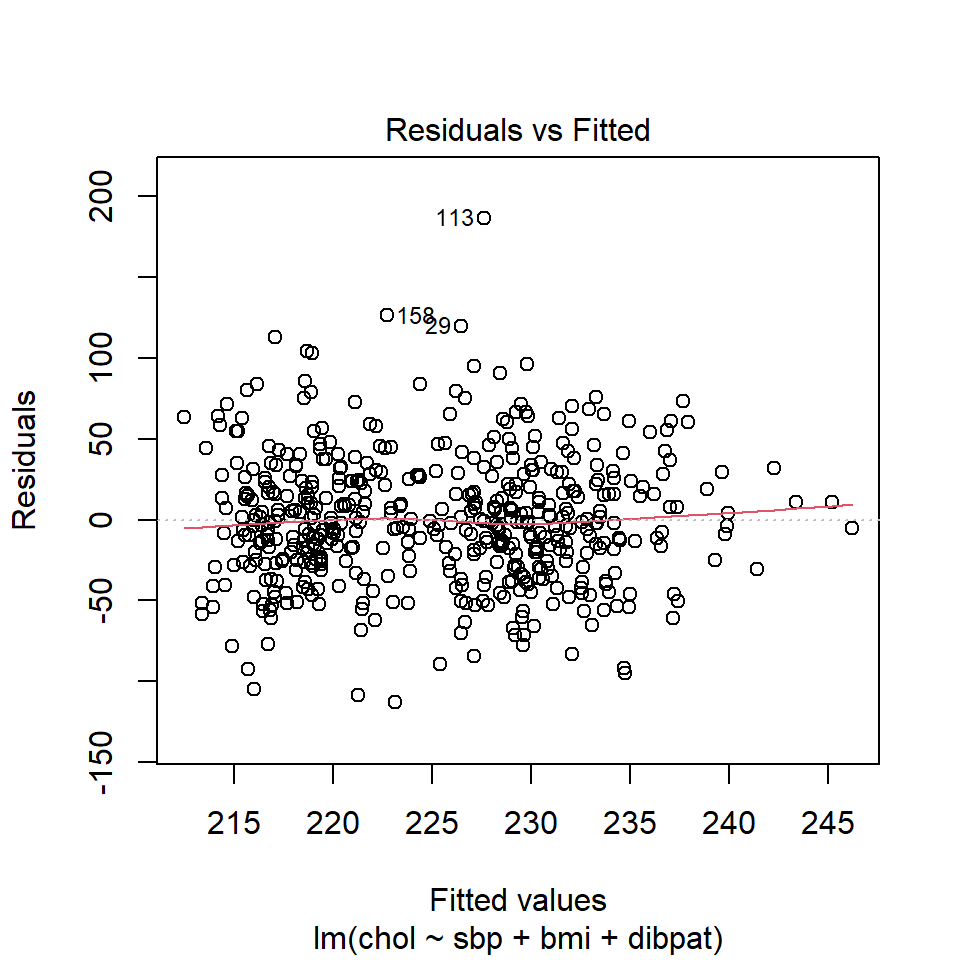
A smooth is again added (in red) to help you identify serious non-linearity. In this case, I would conclude that there were no serious problems with linearity in these data.
The plot also, by default, identifies the three values with the largest (in absolute value) residuals.
- Here, these are rows 29, 113 and 158, each of which has a positive residual (i.e. they represent under-predictions by the model.) To identify these points in the data, use the
slicefunction.
# A tibble: 3 x 5
id sbp bmi dibpat chol
<dbl> <dbl> <dbl> <chr> <dbl>
1 3604 124 29.4 Type A 346
2 2280 120 25.9 Type A 414
3 10360 140 23.4 Type B 349These turn out to be the observations with id = 3604, 2280 and 10360, respectively.
30.3.2.2 Using ggplot2 to plot Residuals vs. Predicted Values
# requires library(ggrepel)
ggplot(aug_chol1, aes(x = .fitted, y = .resid)) +
geom_point() +
geom_point(data = aug_chol1 %>%
slice_max(abs(.resid), n = 5),
col = "red", size = 2) +
geom_text_repel(data = aug_chol1 %>%
slice_max(abs(.resid), n = 5),
aes(label = id), col = "red") +
geom_abline(intercept = 0, slope = 0, lty = "dashed") +
geom_smooth(method = "loess", formula = y ~ x, se = F) +
labs(title = "Residuals vs. Fitted Values from chol_m1",
caption = "5 largest |residuals| highlighted in red.",
x = "Fitted Total Cholesterol", y = "Residual") +
theme(aspect.ratio = 1)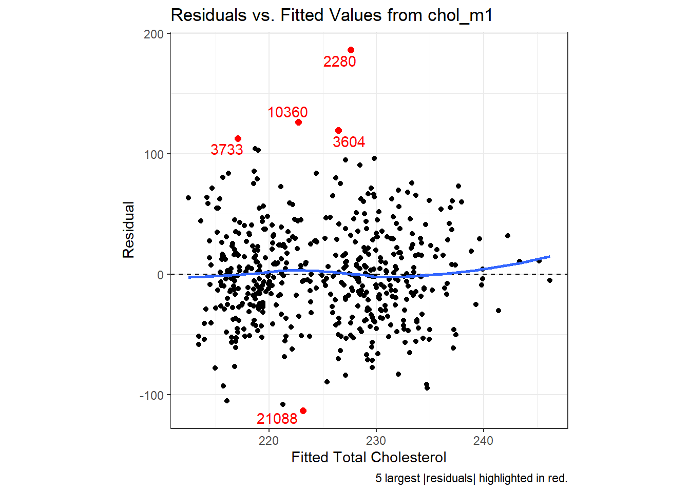
30.3.3 Residuals vs. Predictors To Further Check for Non-Linearity
If we do see evidence of non-linearity in the plot of residuals against fitted values, I usually then proceed to look at residual plots against each of the individual predictors, in turn, to try to identify the specific predictor (or predictors) where we may need to use a transformation.
The appeal of such plots (as compared to the initial scatterplots we looked at of the outcome against each predictor) is that they eliminate the distraction of the linear fit, and let us look more closely at the non-linear part of the relationship between the outcome and each quantitative predictor. We might also look at a boxplot of the relationship between the outcome and a categorical predictor, although this is primarily for the purpose of assessing the potential for non-constant variance, rather than non-linearity.
Although I don’t think you need them here, here are these plots for the residuals from our chol_m1 model.
p1 <- ggplot(aug_chol1, aes(x = sbp, y = chol)) +
geom_point() +
geom_smooth(method = "loess", formula = y ~ x, span = 2, se = FALSE) +
geom_smooth(method = "lm", formula = y ~ x, se = FALSE, col = "tomato")
p2 <- ggplot(aug_chol1, aes(x = bmi, y = chol)) +
geom_point() +
geom_smooth(method = "loess", formula = y ~ x, span = 2, se = FALSE) +
geom_smooth(method = "lm", formula = y ~ x, se = FALSE, col = "tomato")
p3 <- ggplot(aug_chol1, aes(x = dibpat, y = chol)) +
geom_violin(aes(fill = dibpat)) + geom_boxplot(width = 0.3) +
coord_flip() + guides(fill = FALSE)
(p1 + p2) / p3 +
plot_layout(heights = c(2,1)) +
plot_annotation(title = "Residuals vs. Predictors in chol_m1 model")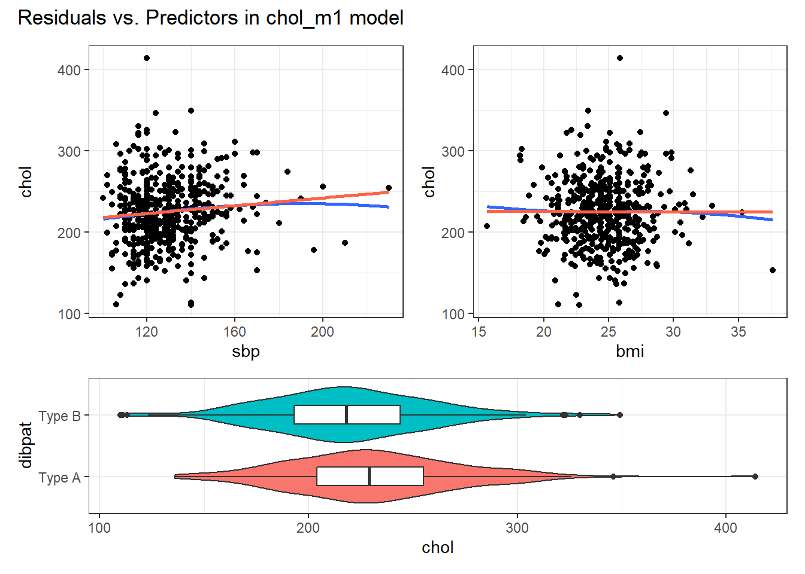
Again, I see no particularly problematic issues with the assumption of linearity in either of the scatterplots here.
30.4 The Independence Assumption
The errors in the true underlying regression model must be mutually independent, but there is no way to be sure that the independence assumption is true. Fortunately, although there can be many predictor variables, there is only one outcome variable and only one set of errors. The independence assumption concerns the errors, so we check the residuals.
Randomization condition. The data should arise from a random sample, or from a randomized experiment.
- The residuals should appear to be randomly scattered and show no patterns, trends or clumps when plotted against the predicted values.
- In the special case when an x-variable is related to time, make sure that the residuals do not have a pattern when plotted against time.
30.4.1 Residuals vs. Fitted Values to Check for Dependence
The wcgs_500 men were not related in any way to each other except that they were drawn from the same 10 employers, and the data are cross-sectional here, so we can be pretty sure that their measurements are independent. The residuals vs. fitted values plots we’ve already seen show no clear trend, cycle or pattern which concerns us.
30.5 The Constant Variance Assumption
The variability of our outcome, y, should be about the same for all values of every predictor x. Of course, we can’t check every combination of x values, so we look at scatterplots and check to see if the plot shows a “fan” shape - in essence, the Does the plot thicken? Condition.
- Scatterplots of residuals against each x or against the predicted values, offer a visual check.
- Be alert for a “fan” or a “funnel” shape showing growing/shrinking variability in one part of the plot.
Reviewing the same plots we have previously seen, I can find no evidence of substantial “plot thickening” in either the plot of residuals vs. fitted values or in any of the plots of the residuals against each predictor separately.
30.5.1 The Scale-Location Plot to Check for Non-Constant Variance
R does provide an additional plot to help assess this issue as linear model diagnostic plot 3. This one looks at the square root of the standardized residual plotted against the fitted values. You want the loess smooth in this plot to be flat, rather than sloped.
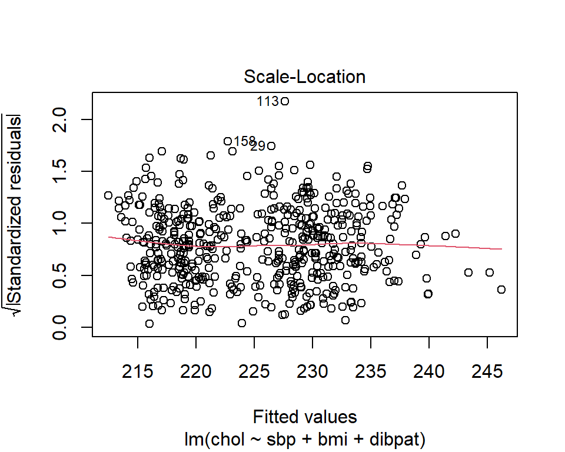
We can replicate this plot using ggplot2 as follows. With a loess smooth with span = 2, there’s no suggestion of a meaningful trend up or down in this plot.
ggplot(aug_chol1, aes(x = .fitted, y = sqrt(abs(.std.resid)))) +
geom_point() +
geom_point(data = aug_chol1 %>%
slice_max(sqrt(abs(.std.resid)), n = 3),
col = "red", size = 1) +
geom_text_repel(data = aug_chol1 %>%
slice_max(sqrt(abs(.std.resid)), n = 3),
aes(label = id), col = "red") +
geom_smooth(method = "loess", formula = y ~ x, span = 2, se = F) +
labs(title = "Scale-Location Plot for chol_m1 model",
caption = "3 largest |Standardized Residual| in red.",
x = "Fitted Value of Total Cholesterol",
y = "Square Root of |Standardized Residual|") +
theme(aspect.ratio = 1)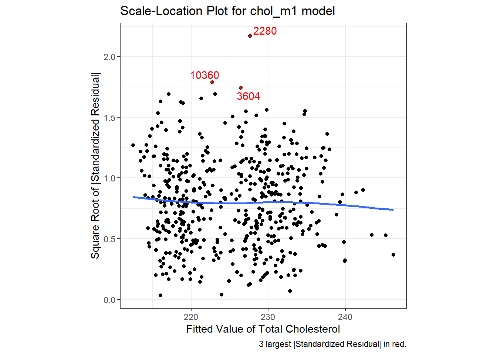
30.5.2 What does trouble look like?
It’s helpful to see how this works in practice. Here are three sets of plots for two settings, where the left plots in each pair show simulated data that are homoscedastic (variance is constant across the levels of the predictor) and the right plots show data that are heteroscedastic (variance is not constant across predictor levels.) Source: This example is modified from http://goo.gl/weMI0U [from stats.stackexchange.com]
Here, I’ll create a tibble containing fake data on a predictor (x) and two outcomes (y1 or y2). The relationship between y1 and x is meant to show no problems with the assumption of homoscedasticity. The relationship between y2 and x, on the other hand, should show severe problems with this assumption.
set.seed(5)
N = 250 ## original n = 500
b0 = 3
b1 = 0.4
s2 = 5
g1 = 1.5 ## original g1 = 1.5
g2 = 0.02 ## original g2 = 0.015
x = runif(N, min=0, max=100)
y1 = b0 + b1*x + rnorm(N, mean=0, sd=sqrt(s2 ))
y2 = b0 + b1*x + rnorm(N, mean=0, sd=sqrt(exp(g1 + g2*x)))
fake_1 <- tibble(id = 1:250, x, y1, y2)First, we’ll fit our two models, and obtain augmented values.
fake_m1 <- lm(y1 ~ x, data = fake_1) # no problems
fake_m2 <- lm(y2 ~ x, data = fake_1) # non-constant variance
aug_fake1 <- augment(fake_m1, data = fake_1)
aug_fake2 <- augment(fake_m2, data = fake_1)Now, let’s look at the plots, developed first using ggplot2.
First, here are the two scatterplots, for our fake_1 model with constant variance on the left, and our fake_2 model with non-constant variance on the right.
p1a <- ggplot(fake_1, aes(x = x, y = y1)) +
geom_point() +
geom_smooth(method = "loess", formula = y ~ x, span = 2, se = F) +
geom_smooth(method = "lm", formula = y ~ x, se = F, col = "tomato") +
labs(title = "Constant Variance (fake_m1)",
subtitle = "Scatterplot of y1 vs. x")
p1b <- ggplot(fake_1, aes(x = x, y = y2)) +
geom_point() +
geom_smooth(method = "loess", formula = y ~ x, span = 2, se = F) +
geom_smooth(method = "lm", formula = y ~ x, se = F, col = "tomato") +
labs(title = "Non-Constant Variance (fake_m2)",
subtitle = "Scatterplot of y2 vs. x")
p1a + p1b 
Second, here are the two plots of residuals vs. fitted values, for our fake_1 model with constant variance on the left, and our fake_2 model with non-constant variance on the right.
p2a <- ggplot(aug_fake1, aes(x = .fitted, y = .resid)) +
geom_point() +
geom_point(data = aug_fake1 %>%
slice_max(abs(.resid), n = 5),
col = "red", size = 2) +
geom_text_repel(data = aug_fake1 %>%
slice_max(abs(.resid), n = 5),
aes(label = id), col = "red") +
geom_abline(intercept = 0, slope = 0, lty = "dashed") +
geom_smooth(method = "loess", formula = y ~ x, se = F) +
labs(title = "Constant Variance (fake_m1)",
subtitle = "Residuals vs. Fitted Values",
caption = "5 largest |residuals| highlighted in red.",
x = "Fitted Value of y1", y = "Residual") +
theme(aspect.ratio = 1)
p2b <- ggplot(aug_fake2, aes(x = .fitted, y = .resid)) +
geom_point() +
geom_point(data = aug_fake2 %>%
slice_max(abs(.resid), n = 5),
col = "red", size = 2) +
geom_text_repel(data = aug_fake2 %>%
slice_max(abs(.resid), n = 5),
aes(label = id), col = "red") +
geom_abline(intercept = 0, slope = 0, lty = "dashed") +
geom_smooth(method = "loess", formula = y ~ x, se = F) +
labs(title = "Non-Constant Variance (fake_m2)",
subtitle = "Residuals vs. Fitted Values",
caption = "5 largest |residuals| highlighted in red.",
x = "Fitted Value of y1", y = "Residual") +
theme(aspect.ratio = 1)
p2a + p2b 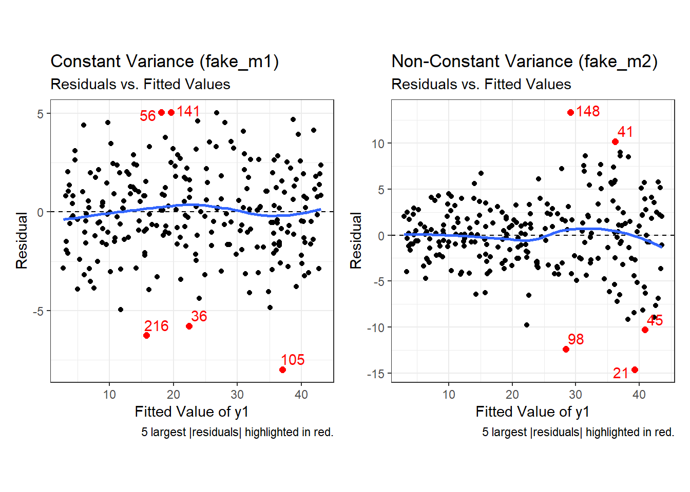
Finally, here is the scale-location plot for each scenario.
p3a <- ggplot(aug_fake1, aes(x = .fitted, y = sqrt(abs(.std.resid)))) +
geom_point() +
geom_point(data = aug_fake1 %>%
slice_max(sqrt(abs(.std.resid)), n = 3),
col = "red", size = 1) +
geom_text_repel(data = aug_fake1 %>%
slice_max(sqrt(abs(.std.resid)), n = 3),
aes(label = id), col = "red") +
geom_smooth(method = "loess", formula = y ~ x, span = 2, se = F) +
labs(title = "Constant Variance (fake_m1)",
subtitle = "Scale-Location Plot",
caption = "3 largest |Standardized Residual| in red.",
x = "Fitted Value",
y = "Square Root of |Standardized Residual|") +
theme(aspect.ratio = 1)
p3b <- ggplot(aug_fake2, aes(x = .fitted, y = sqrt(abs(.std.resid)))) +
geom_point() +
geom_point(data = aug_fake2 %>%
slice_max(sqrt(abs(.std.resid)), n = 3),
col = "red", size = 1) +
geom_text_repel(data = aug_fake2 %>%
slice_max(sqrt(abs(.std.resid)), n = 3),
aes(label = id), col = "red") +
geom_smooth(method = "loess", formula = y ~ x, span = 2, se = F) +
labs(title = "Non-Constant Variance (fake_m2)",
subtitle = "Scale-Location Plot",
caption = "3 largest |Standardized Residual| in red.",
x = "Fitted Value",
y = "Square Root of |Standardized Residual|") +
theme(aspect.ratio = 1)
p3a + p3b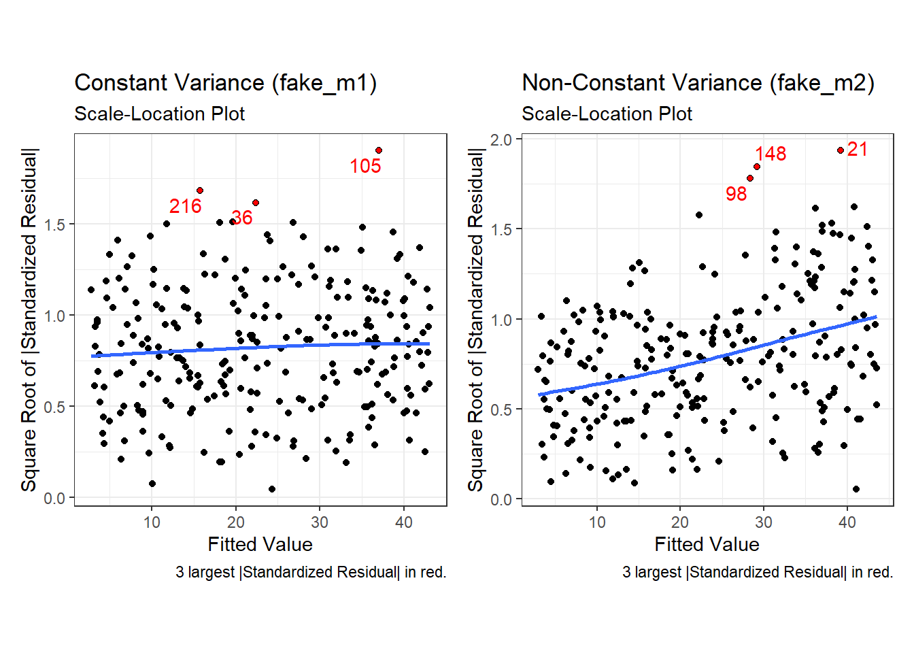
Note the funnel shape for the upper two heteroscedastic (non-constant variance) plots, and the upward sloping loess line in the last one.
Here are the relevant plots for the same scenario using base R.
par(mfrow=c(3,2))
plot(y1 ~ x, data = fake_1, main="Constant Variance")
plot(y2 ~ x, data = fake_1, main="Non-Constant Variance")
plot(fake_m1, which=1)
plot(fake_m2, which=1)
plot(fake_m1, which=3)
plot(fake_m2, which=3)
30.6 The Normality Assumption
If the plot is straight enough, the data are independent, and the plots don’t thicken, you can now move on to the final assumption, that of Normality.
We assume that the errors around the idealized regression model at any specified values of the x-variables follow a Normal model. We need this assumption so that we can use a Student’s t-model for inference. As with other times when we’ve used Student’s t, we’ll settle for the residuals satisfying the Nearly Normal condition. To assess this, we simply look at a histogram or Normal probability plot of the residuals. Note that the Normality Assumption also becomes less important as the sample size grows.
30.7 Outlier Diagnostics: Points with Unusual Residuals
A multiple regression model will always have a point which displays the most unusual residual (that is, the residual furthest from zero in either a positive or negative direction.) As part of our assessment of the normality assumption, we will often try to decide whether the residuals follow a Normal distribution by creating a Q-Q plot of standardized residuals.
30.7.1 Standardized Residuals
Standardized residuals are scaled to have mean zero and a constant standard deviation of 1, as a result of dividing the original (raw) residuals by an estimate of the standard deviation that uses all of the data in the data set.
The augment function, when applied to a linear regression model, will generate the standardized residuals and store them in the .std.resid column.
If multiple regression assumptions hold, then the standardized residuals (in addition to following a Normal distribution in general) will also have mean zero and standard deviation 1, with approximately 95% of values between -2 and +2, and approximately 99.74% of values between -3 and +3.
A natural check, therefore, will be to identify the most extreme/unusual standardized residual in our data set, and see whether its value is within the general bounds implied by the Empirical Rule associated with the Normal distribution. If, for instance, we see a standardized residual below -3 or above +3, this is likely to be a very poorly fit point (we would expect to see a point like this about 2.6 times for every 1,000 observations.)
A very poorly fitting point, especially if it also has high influence on the model (a concept we’ll discuss shortly), may be sufficiently different from the rest of the points in the data set to merit its removal before modeling. If we did remove such a point, we’d have to have a good reason for this exclusion, and include that explanation in our report.
R’s general plot set for a linear model includes (as plot 2) a Normal Q-Q plot of the standardized residuals from the model.
30.7.2 Checking the Normality Assumption with a Plot
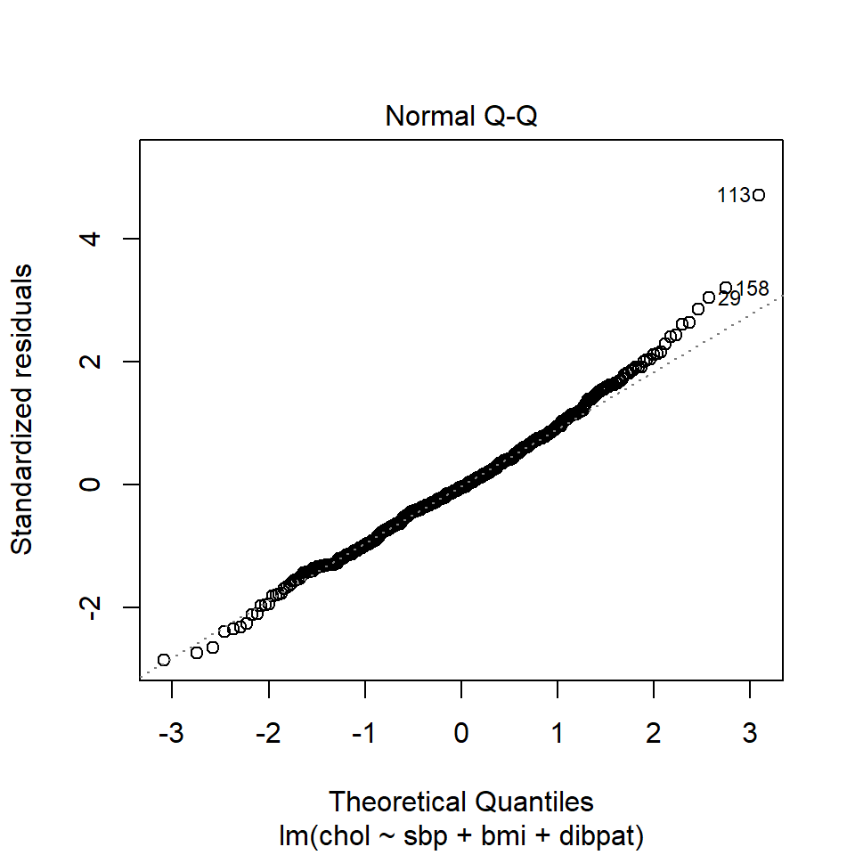
or we can use the ggplot2 version:
p1 <- ggplot(aug_chol1, aes(sample = .std.resid)) +
geom_qq() +
geom_qq_line(col = "red") +
labs(title = "Normal Q-Q plot",
y = "Standardized Residual from chol_m1",
x = "Standard Normal Quantiles") +
theme(aspect.ratio = 1)
p2 <- ggplot(aug_chol1, aes(y = .std.resid, x = "")) +
geom_violin(fill = "dodgerblue") +
geom_boxplot(width = 0.3) +
labs(title = "Box and Violin Plot",
y = "Standardized Residual from chol_m1",
x = "mod_1")
p1 + p2 +
plot_layout(widths = c(2, 1)) +
plot_annotation(
title = "Normality of Standardized Residuals from mod_1",
caption = paste0("n = ",
nrow(aug_chol1 %>% select(.std.resid)),
" residual values are plotted here."))
The Q-Q plot of standardized residuals shows one point (in row 113, according to the plot) that is far away from our expectations under the Normal model. Let’s look at that point a little more closely.
| id | sbp | bmi | dibpat | chol | .fitted | .resid | .std.resid |
|---|---|---|---|---|---|---|---|
| 2280 | 120 | 25.86 | Type A | 414 | 227.61 | 186.39 | 4.71 |
The standardized residual here is 4.71. That seems excessively large, in a sample of 250 observations.
30.7.3 Assessing Standardized Residuals with an Outlier Test
Is a standardized residual of 4.71 particularly unusual in a sample of 250 such standardized residuals, given that we are trying to assume that these are well modeled by a Normal distribution, supposedly with mean 0 and standard deviation 1?
Yes. The car library has a test called outlierTest which can be applied to a linear model to see if the most unusual studentized residual in absolute value is a surprise given the sample size (the studentized residual is very similar to the standardized residual - it simply uses a different estimate for the standard deviation for every point, in each case excluding the point it is currently studying)
rstudent unadjusted p-value Bonferroni p
113 4.816993 1.9404e-06 0.00097019Our conclusion from the Bonferroni p value here is that there’s evidence to support the belief that we could have a serious problem with Normality, in that a studentized residual of 4.82 is out of the range we might reasonably expect to see given a Normal distribution of errors and 250 observations.
Which value is that? It’s the subject with id = 2280.
| id | sbp | bmi | dibpat | chol | .fitted | .resid | .std.resid |
|---|---|---|---|---|---|---|---|
| 2280 | 120 | 25.86 | Type A | 414 | 227.61 | 186.39 | 4.71 |
In terms of solutions, we could consider dropping the point, but this would leave us with the vexing problem of how, exactly, to justify that choice. One question we might ask is whether dropping that point (row 113, or id = 2280) from our chol_m1 model have a big impact?
30.8 Outlier Diagnostics: Identifying Points with Unusually High Leverage
An observation can be an outlier not just in terms of having an unusual residual, but also in terms of having an unusual combination of predictor values. Such an observation is described as having high leverage in a data set.
- The
augmentfunction stores the leverage for each point in the.hatvariable. - The average leverage value is equal to k/n, where n is the number of observations included in the regression model, and k is the number of coefficients (slopes + intercept).
- Any point with a leverage value greater than 3 times the average leverage of a point in the data set is one that should be investigated closely.
For instance, in the wcgs_500 data, we have 500 observations, so the average leverage will be 4/500 = 0.008 and a high leverage point would have leverage \(\geq\) 12/500 or .024. We can check this out directly, with a sorted list of leverage values.
# A tibble: 12 x 6
id sbp bmi dibpat chol .hat
<dbl> <dbl> <dbl> <chr> <dbl> <dbl>
1 19078 230 24.4 Type B 254 0.0884
2 10214 170 37.7 Type B 153 0.0600
3 22025 210 26.5 Type B 187 0.0548
4 10075 150 35.3 Type B 224 0.0401
5 16031 200 28.1 Type A 256 0.0392
6 11432 196 27.3 Type B 178 0.0384
7 3085 190 22.3 Type A 241 0.0383
8 13389 120 33.0 Type A 232 0.0303
9 12976 106 15.7 Type B 207 0.0287
10 3182 120 32.3 Type A 218 0.0262
11 19099 104 30.5 Type A 234 0.0252
12 3235 184 26.6 Type A 274 0.0248Twelve of our 500 subjects meet the standard for large leverage values (.hat values exceeding three times the average .hat value) but none of these are the outlier (id = 2280) we identified as having an especially poor fit (large standardized residual.)
# A tibble: 1 x 3
id .std.resid .hat
<dbl> <dbl> <dbl>
1 2280 4.71 0.00555Another way to understand the impact of leverage is to look at a plot of residuals vs. leverage, which is diagnostic plot 5 for a linear model. Here’s the base R version for our chol_m1 model.

Here is the ggplot2 version.
ggplot(aug_chol1, aes(x = .hat, y = .std.resid)) +
geom_point() +
geom_point(data = aug_chol1 %>% filter(.cooksd >= 0.5),
col = "red", size = 2) +
geom_text_repel(data = aug_chol1 %>% filter(.cooksd >= 0.5),
aes(label = id), col = "red") +
geom_smooth(method = "loess", formula = y ~ x, span = 2, se = F) +
geom_vline(aes(xintercept = 3*mean(.hat)), lty = "dashed") +
labs(title = "Residuals vs. Leverage",
x = "Leverage", y = "Standardized Residual") 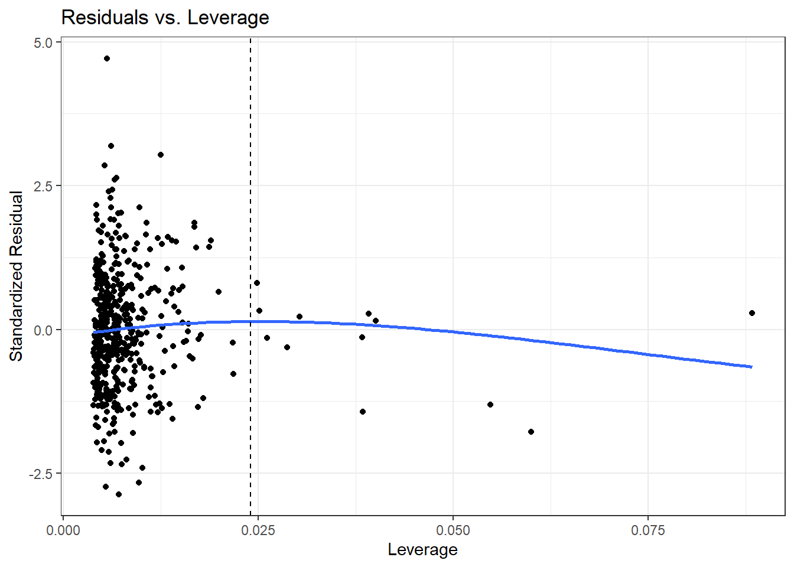
We see that the most highly leveraged points are shown furthest to the right in this plot (in fact, I’ve inserted a dotted vertical line at the cutpoint of 3*mean(.hat)), but our problematic standardized residual has a very typical leverage value (at the top left of this plot.)
Let’s look at our highest leveraged point (id = 19078 from our list above) and remember that this just means that this point is unusual in terms of its predictor values.
# A tibble: 1 x 5
id sbp bmi dibpat .hat
<dbl> <dbl> <dbl> <chr> <dbl>
1 19078 230 24.4 Type B 0.0884Compare these findings to what we see in the wcgs_500 data overall. Let’s focus on the quantitative variables involved in our model, sbp and bmi.
response min Q1 median Q3 max mean sd
1 sbp 100.0000 120.00000 126.0000 140.0000 230.00000 129.39800 16.548453
2 bmi 15.6605 23.03123 24.5412 26.1554 37.65281 24.65342 2.546486
n missing
1 500 0
2 500 0Note that our highly leveraged point has the largest sbp of all 500 subjects, although a rather typical bmi.
If you’re wondering about the rest of our chol_m1 model, there are only two possible values of dibpat and so a point cannot really be an outlier on that variable.
dibpat n percent
Type A 259 0.518
Type B 241 0.482Remember that 12 of the points in our chol_m1 model showed up with leverage values more than three times higher than the mean leverage.
[1] 12So, let’s look at a plot of the two quantitative predictors in our data to see which 12 points show up as those with “high” leverage.
ggplot(aug_chol1, aes(x = sbp, y = bmi)) +
geom_point(col = "gray50") +
geom_point(data = aug_chol1 %>%
slice_max(.hat, n = 12),
col = "red", size = 2) +
labs(x = "Systolic BP", y = "Body Mass Index",
title = "Where are the highly leveraged points in our model?",
subtitle = "wcgs_500 data, model chol_1, 12 highest leverage points shown in red")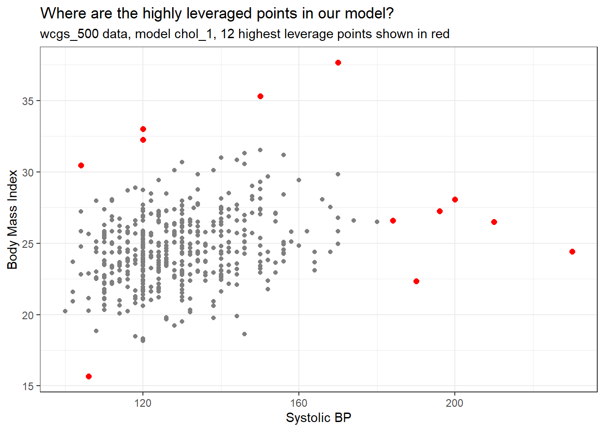
The points with high leverage (large values of .hat) are simply those with an unusual combination of the two quantitative predictors.
30.9 Outlier Diagnostics: Identifying Points with High Influence on the Model
A point in a regression model has high influence if the inclusion (or exclusion) of that point will have substantial impact on the model, in terms of the estimated coefficients, and the summaries of fit. The measure I routinely use to describe the level of influence a point has on the model is called Cook’s distance.
As a general rule, a Cook’s distance greater than 1 indicates a point likely to have substantial influence on the model, while a point in the 0.5 to 1.0 range is only occasionally worthy of investigation. Observations with Cook’s distance below 0.5 are unlikely to influence the model in any substantial way.
30.9.1 Assessing the Value of Cook’s Distance
You can obtain information on Cook’s distance in several ways in R.
- My favorite is model diagnostic plot 5 (the residuals vs. leverage plot) which we’ve seen before and which I repeat below. This plot uses red contours to indicate the value of Cook’s distance.
- This is possible because influence, as measured by Cook’s distance, is a function of both the observation’s standardized residual and its leverage.
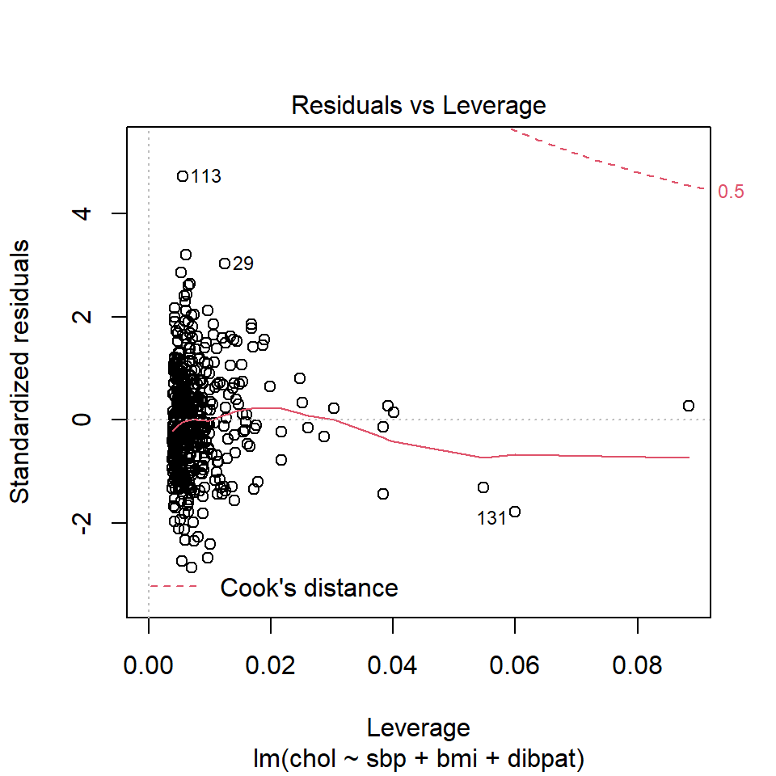
No points in this plot indicate substantial influence on our model. To do so, they’d have to be outside the Cook’s distance contour shown at the top right of this plot (there is a similar arc at the bottom right, but it’s too far away from the data to show up in the plot.)
30.9.2 Index Plot of Cook’s Distance
Model Diagnostic Plot 4 for a linear model is an index plot of Cook’s distance.
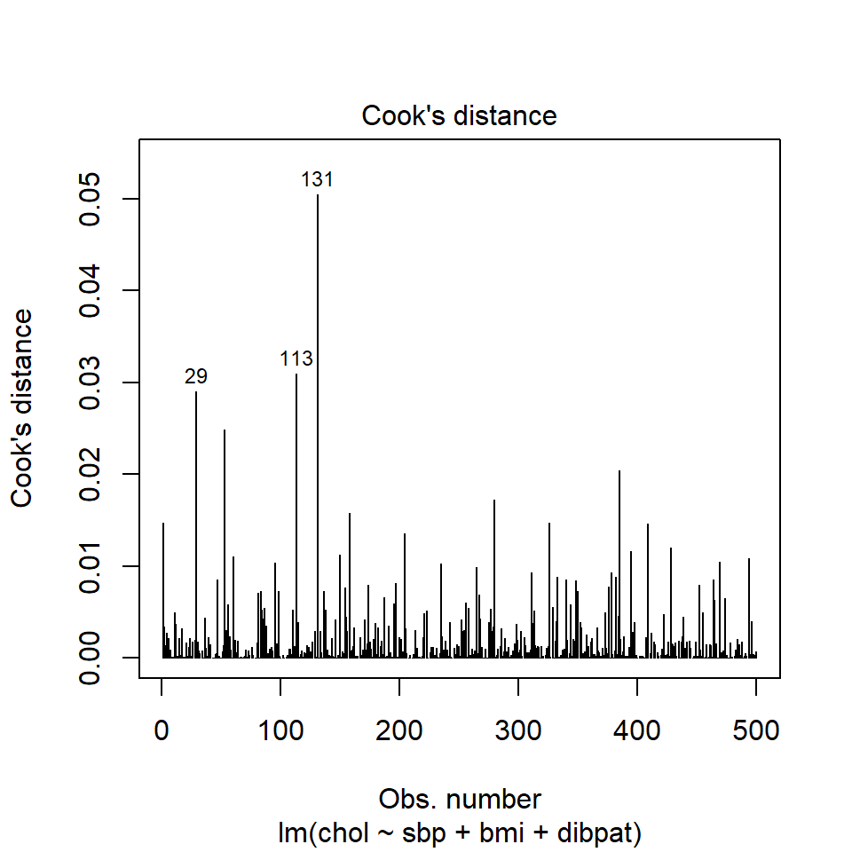
Or, if you like, run the ggplot2 version:
aug_chol1_ex <- aug_chol1 %>%
mutate(obsnum = 1:nrow(aug_chol1 %>% select(.cooksd)))
ggplot(aug_chol1_ex, aes(x = obsnum, y = .cooksd)) +
geom_point() +
geom_segment(aes(x = obsnum, xend = obsnum, y = 0, yend = .cooksd)) +
geom_text_repel(data = aug_chol1_ex %>%
slice_max(.cooksd, n = 3),
aes(label = id)) +
labs(x = "Row Number",
y = "Cook's Distance",
title = "Cook's distance Index plot for chol_m1",
subtitle = "Subjects with the 3 largest Cook's d values are identified.")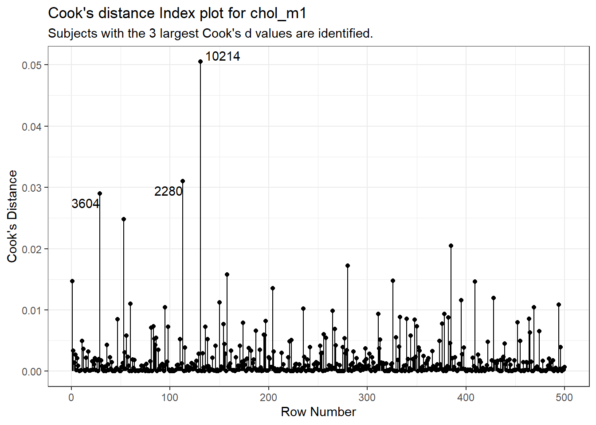
It is clear from this plot that the largest Cook’s distance (somewhere between 0.05 and 0.06) is for the observation in subject 10214 (or row 131 of the data set, depending on which version you build. All of the Cook’s distance values are stored in the .cooksd variable in our augmented results. Let’s look at the six largest Cook’s distance values.
aug_chol1 %>% select(id, .std.resid, .hat, .cooksd) %>%
arrange(desc(.cooksd)) %>% head() %>% kable(dig = 3)| id | .std.resid | .hat | .cooksd |
|---|---|---|---|
| 10214 | -1.779 | 0.060 | 0.051 |
| 2280 | 4.713 | 0.006 | 0.031 |
| 3604 | 3.033 | 0.012 | 0.029 |
| 22025 | -1.308 | 0.055 | 0.025 |
| 11432 | -1.432 | 0.038 | 0.020 |
| 12392 | -2.661 | 0.010 | 0.017 |
Remember that we’d need a Cook’s distance value to be at least 0.50 for us to worry about it in a serious way. Here, the largest we see (0.05 for id = 10214) is still far away from that standard.
What is the story on point 10214? Why is it unusual?
aug_chol1 %>% filter(id == 10214) %>%
select(id:.fitted, .std.resid, .hat, .cooksd) %>%
kable(dig = 2)| id | sbp | bmi | dibpat | chol | .fitted | .std.resid | .hat | .cooksd |
|---|---|---|---|---|---|---|---|---|
| 10214 | 170 | 37.65 | Type B | 153 | 221.42 | -1.78 | 0.06 | 0.05 |
This turns out to be the subject with the largest BMI in the data, hence some leverage, and a somewhat large (-1.78) but not enormous standardized residual. Hence the combination suggests some influence on the model.
30.10 Running a Regression Model While Excluding A Point
Suppose that we wanted to remove the point with the most influence over the model. We could fit a model to the data without id = 10214 to see the impact of this change. Let’s try it.
Call:
lm(formula = chol ~ sbp + bmi + dibpat, data = wcgs_500 %>% filter(id !=
10214))
Residuals:
Min 1Q Median 3Q Max
-113.062 -25.453 -2.469 23.954 186.200
Coefficients:
Estimate Std. Error t value Pr(>|t|)
(Intercept) 206.3207 20.3647 10.131 < 2e-16 ***
sbp 0.2464 0.1124 2.192 0.02883 *
bmi -0.3127 0.7438 -0.420 0.67433
dibpatType B -10.6424 3.5635 -2.986 0.00296 **
---
Signif. codes: 0 '***' 0.001 '**' 0.01 '*' 0.05 '.' 0.1 ' ' 1
Residual standard error: 39.57 on 495 degrees of freedom
Multiple R-squared: 0.02943, Adjusted R-squared: 0.02355
F-statistic: 5.003 on 3 and 495 DF, p-value: 0.001996Compare these results to those obtained with the full data set, shown below.
- How is the model affected by removing subject 10214?
- What is the impact on the slopes?
- On the summary measures? Residuals?
Call:
lm(formula = chol ~ sbp + bmi + dibpat, data = wcgs_500)
Residuals:
Min 1Q Median 3Q Max
-113.133 -25.689 -1.932 24.036 186.390
Coefficients:
Estimate Std. Error t value Pr(>|t|)
(Intercept) 214.5185 19.8825 10.789 < 2e-16 ***
sbp 0.2361 0.1125 2.099 0.03634 *
bmi -0.5894 0.7290 -0.808 0.41921
dibpatType B -11.0408 3.5643 -3.098 0.00206 **
---
Signif. codes: 0 '***' 0.001 '**' 0.01 '*' 0.05 '.' 0.1 ' ' 1
Residual standard error: 39.66 on 496 degrees of freedom
Multiple R-squared: 0.02954, Adjusted R-squared: 0.02367
F-statistic: 5.033 on 3 and 496 DF, p-value: 0.001915While it is true that we can sometimes improve the performance of the model in some ways by removing this point, there’s no good reason to do so. We can’t just remove a point from the data set without a good reason (and, to be clear, “I ran my model and it doesn’t fit this point well” is NOT a good reason). Good reasons would include:
- This observation was included in the sample in error, for instance, because the subject was not eligible.
- An error was made in transcribing the value of this observation to the final data set.
- And, sometimes, even “This observation is part of a meaningful subgroup of patients that I had always intended to model separately…” assuming that’s true.
30.11 Summarizing Regression Diagnostics for 431
Check the “straight enough” condition with scatterplots of the y variable (outcome) against each x-variable (predictor), usually via the top row of a scatterplot matrix.
If the data are straight enough (that is, if it looks like the regression model is plausible), fit a regression model, to obtain residuals and influence measures.
- If not, consider using the Box-Cox approach to identify a possible transformation for the outcome variable, and then recheck the straight enough condition.
The plot function for a fitted linear model builds five diagnostic plots.
[Plot 1] A scatterplot of the residuals against the fitted values.
- This plot should look patternless. Check in particular for any bend (which would suggest that the data weren’t all that straight after all) and for any thickening, which would indicate non-constant variance.
- If the data are measured over time, check especially for evidence of patterns that might suggest they are not independent. For example, plot the residuals against time to look for patterns.
- These values are stored as
.residand.fittedby theaugment()function applied to a linear model.
[Plot 3] A scale-location plot of the square root of the standardized residuals against the fitted values to look for a non-flat loess smooth, which indicates non-constant variance. Standardized residuals are obtained via
augmentand stored in the.std.residvariable.[Plot 2] If the plots above look OK, then consider a Normal Q-Q plot of the standardized residuals to check the nearly Normal condition.
[Plot 5] The final plot we often look at is the plot of residuals vs. leverage, with influence contours. Sometimes, we’ll also look at [Plot 4] the index plot of the Cook’s distance for each observation in the data set.
- To look for points with substantial leverage on the model by virtue of having unusual values of the predictors - look for points whose leverage is at least 3 times as large as the average leverage value.
- The average leverage is always k/n, where k is the number of coefficients fit by the model (including the slopes and intercept), and n is the number of observations in the model.
- To obtain the leverage values, use the
augment()function which stores them in.hat. - To look for points with substantial influence on the model, that is, removing them from the model would change it substantially, consider the Cook’s distance, plotted in contours in Plot 5, or in an index plot in Plot 4.
- Any Cook’s d > 1 will likely have a substantial impact on the model.
- Even points with Cook’s d > 0.5 may merit further investigation.
- Find the Cook’s distances using the
augment()function, which stores them in.cooksd.
- To look for points with substantial leverage on the model by virtue of having unusual values of the predictors - look for points whose leverage is at least 3 times as large as the average leverage value.
- The average leverage is always k/n, where k is the number of coefficients fit by the model (including the slopes and intercept), and n is the number of observations in the model.
- To obtain the leverage values, use the
30.12 Violated Assumptions: Problematic Residual Plots?
So what do serious assumption violations look like, and what can we do about them?
30.13 Problems with Linearity
Here is a simulated example that shows a clear problem with non-linearity.
set.seed(4311); x1 <- rnorm(n = 100, mean = 15, sd = 5)
set.seed(4312); x2 <- rnorm(n = 100, mean = 10, sd = 5)
set.seed(4313); e1 <- rnorm(n = 100, mean = 0, sd = 15)
y <- 15 + x1 + x2^2 + e1
viol1 <- data.frame(outcome = y, pred1 = x1, pred2 = x2) %>% tbl_df
model.1 <- lm(outcome ~ pred1 + pred2, data = viol1)
plot(model.1, which = 1)
In light of this, I would be looking for a potential transformation of outcome. Does the Box-Cox plot make any useful suggestions?
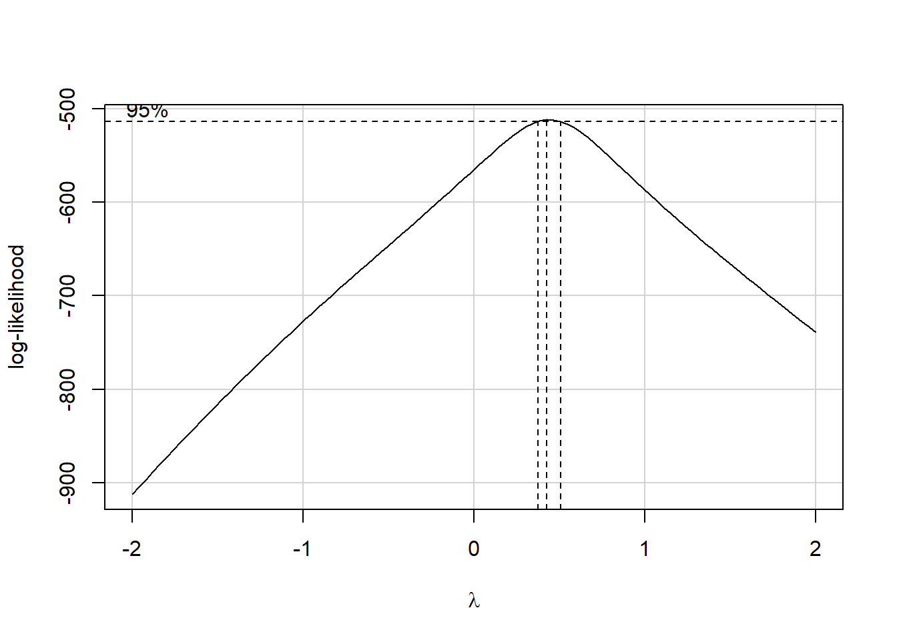
Estimated transformation parameter
Y1
0.4414775 Note that if the outcome was negative, we would have to add some constant value to every outcome in order to get every outcome value to be positive, and Box-Cox to run. This suggests fitting a new model, using the square root of the outcome.
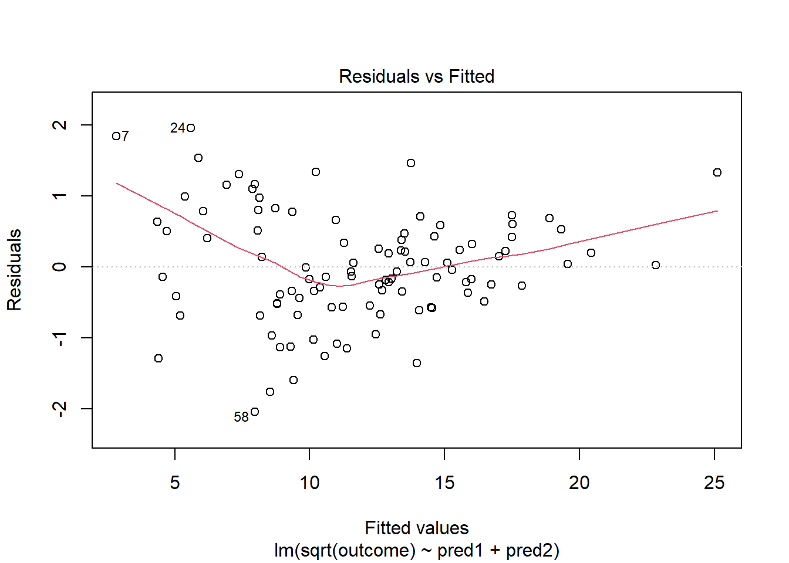
This is meaningfully better in terms of curve, but now looks a bit fan-shaped, indicating a potential problem with heteroscedasticity. Let’s look at the scale-location plot for this model.
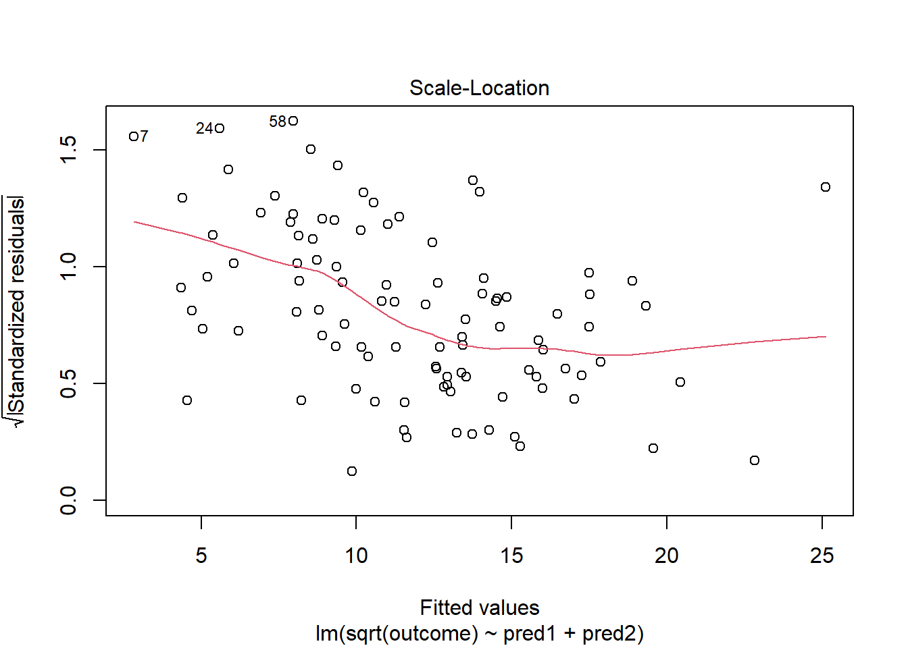
This definitely looks like there’s a trend down in this plot. So the square root transformation, by itself, probably hasn’t resolved assumptions sufficiently well. We’ll have to be very careful about our interpretation of the model.
30.14 Problems with Non-Normality: An Influential Point
With 100 observations, a single value with a standardized residual above 3 is very surprising. In our initial model.1 here, we have a standardized residual value as large as 6, so we clearly have a problem with that outlier.
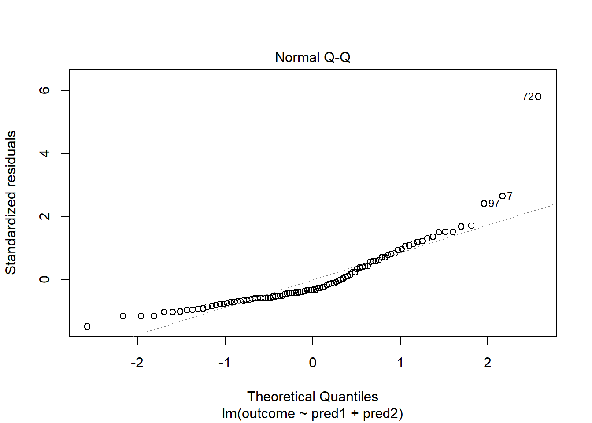
Should we, perhaps, remove point 72, and try again? Only if we have a reason beyond “it was poorly fit” to drop that point. Is point 72 highly leveraged or influential?
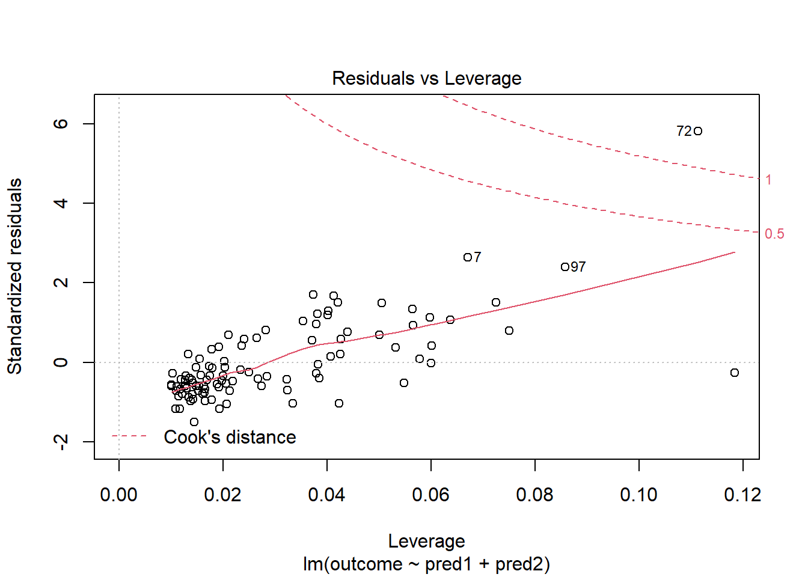
What if we drop this point (72) and fit our linear model again. Does this resolve our difficulty with the assumption of linearity?
model.1.no72 <- lm(outcome ~ pred1 + pred2, data = viol1[-72,])
par(mfrow=c(1,2))
plot(model.1, which = 1, caption = "With Point 72")
plot(model.1.no72, which = 1, caption = "Without Point 72")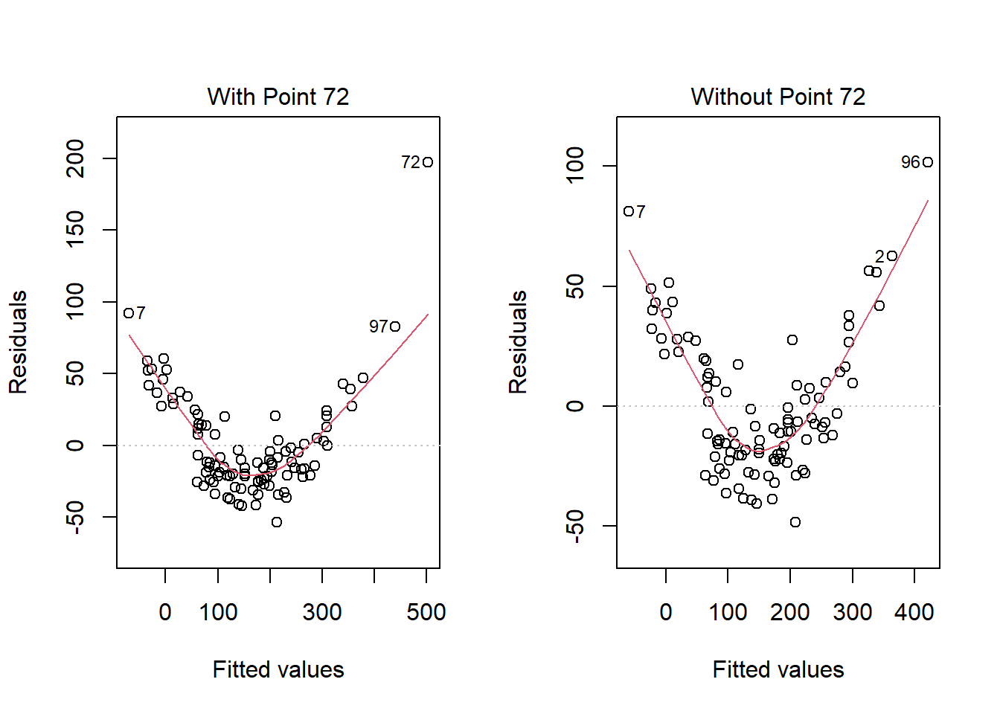
No, it doesn’t. But what if we combine our outcome transformation with dropping point 72?
model.2.no72 <- lm(sqrt(outcome) ~ pred1 + pred2, data = viol1[-72,])
par(mfrow=c(1,2))
plot(model.2.no72, which = c(1,3))
Nope. That still doesn’t alleviate the problem of heteroscedasticity very well. At least, we no longer have any especially influential points, nor do we have substantial non-Normality.
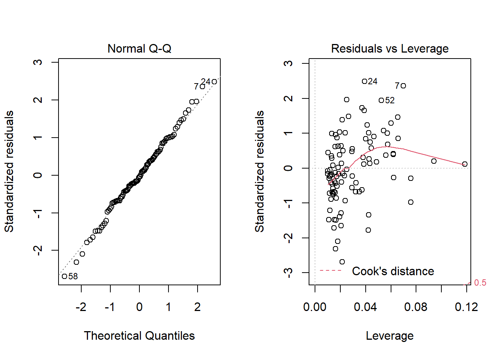
At this point, I would be considering potential transformations of the predictors, quite possibly fitting some sort of polynomial term or cubic spline term in the predictors, but I’ll leave that for discussion in 432.
30.15 Problems with Non-Normality: Skew
set.seed(4314); x1 <- rnorm(n = 100, mean = 15, sd = 5)
set.seed(4315); x2 <- rnorm(n = 100, mean = 10, sd = 5)
set.seed(4316); e2 <- rnorm(n = 100, mean = 3, sd = 5)
y2 <- 50 + x1 + x2 + e2^2
viol2 <- data.frame(outcome = y2, pred1 = x1, pred2 = x2) %>% tbl_df
model.3 <- lm(outcome ~ pred1 + pred2, data = viol2)
plot(model.3, which = 2)
Skewed residuals often show up in strange patterns in the plot of residuals vs. fitted values, too, as in this case.

Clearly, we have some larger residuals on the positive side, but not on the negative side. Would an outcome transformation be suggested by Box-Cox?
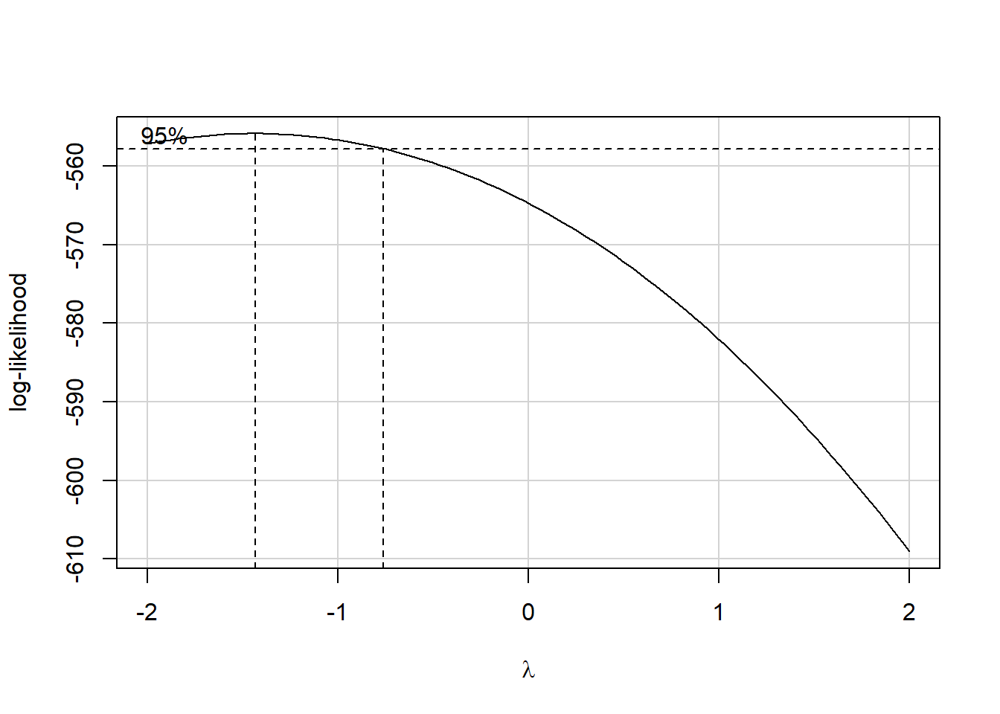
Estimated transformation parameter
Y1
-1.438747 The suggested transformation looks like the inverse of our outcome.
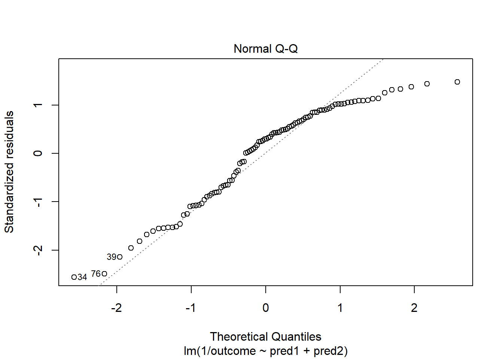
OK. That’s something of an improvement. How about the other residual plots with this transformation?

The impact of the skew is reduced, at least. I might well be satisfied enough with this, in practice.
References
Bock, David E., Paul F. Velleman, and Richard D. De Veaux. 2004. Stats: Modelling the World. Boston MA: Pearson Addison-Wesley.